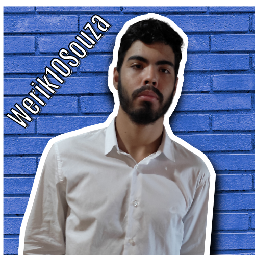

Sou um jovem entusiasta do mundo na programação. Curso atualmente HTML5 & CSS3, no canal do Curso em Vídeo, com o professor Gustavo Guanabara.
O começo da minha jornada no mundo da programação, foi no ano de 2019,atraves do canal do professor o que vou fazer da minha vida, AGORA?
Lembrer da area de pogramação, resolvir estudar e foca, e ser tornar um especialista/refêrencia, mais percisamente em desenvolvendo em FORDE-END, no primeiro momento. No futuro quero mim tornar um exerlente profissonal em FULL-STREK. Espero que tenha sendo claro, na minha pequena e inicial historia nesse espertacular mundo da programação.